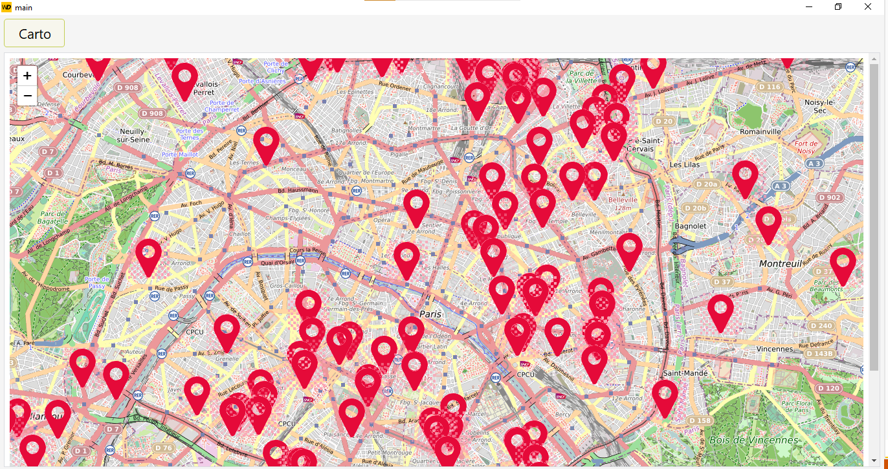
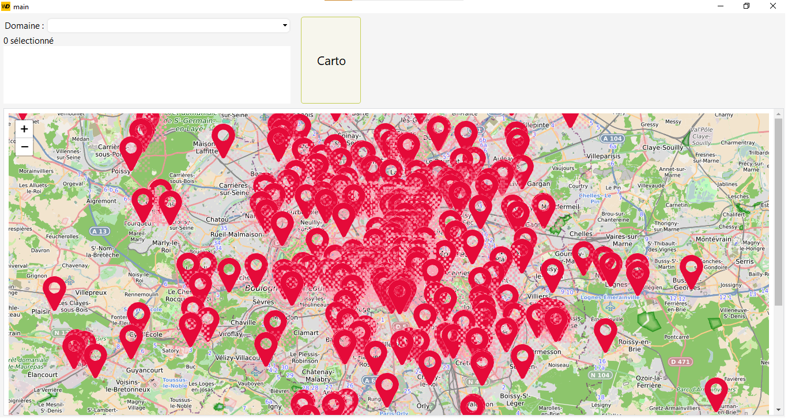
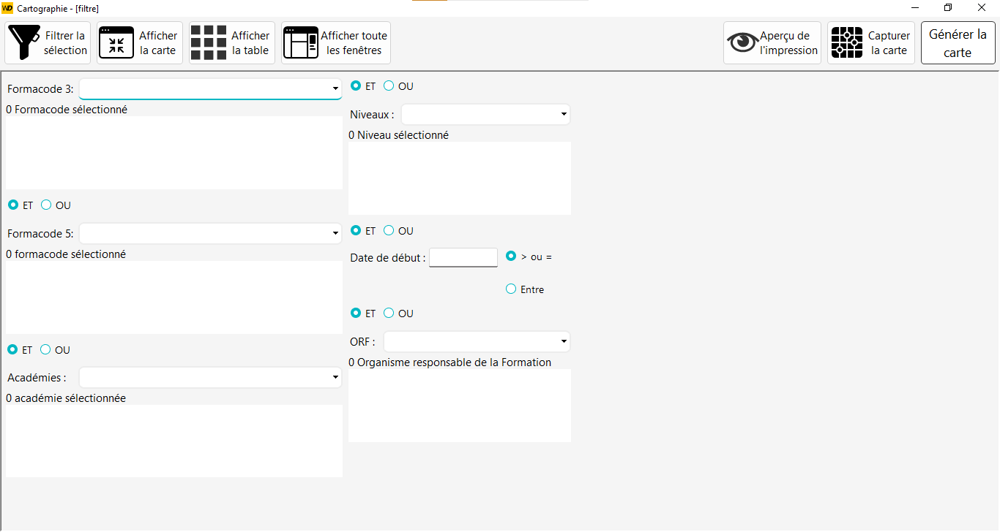
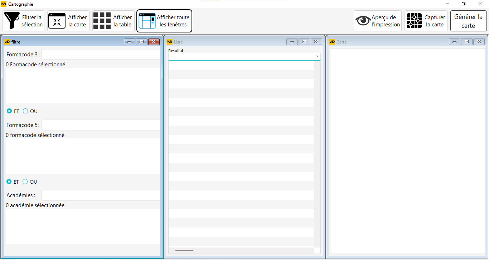
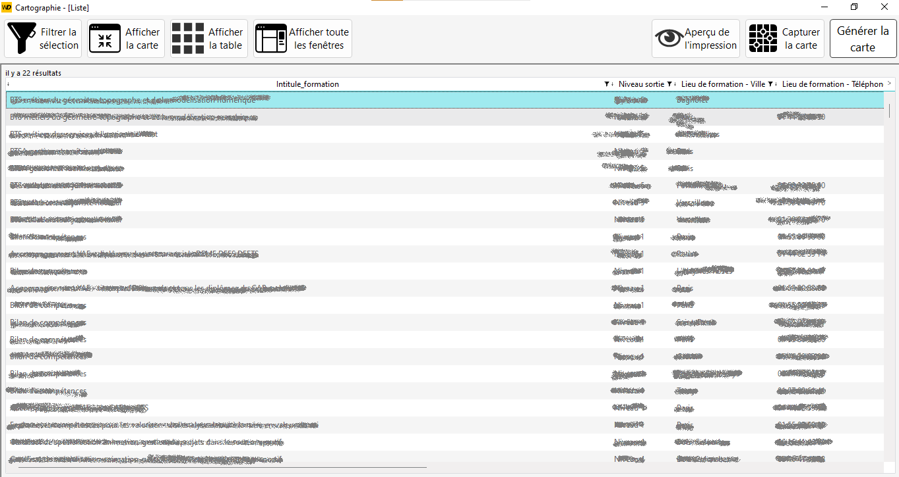
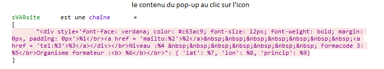
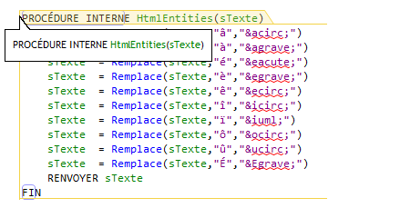
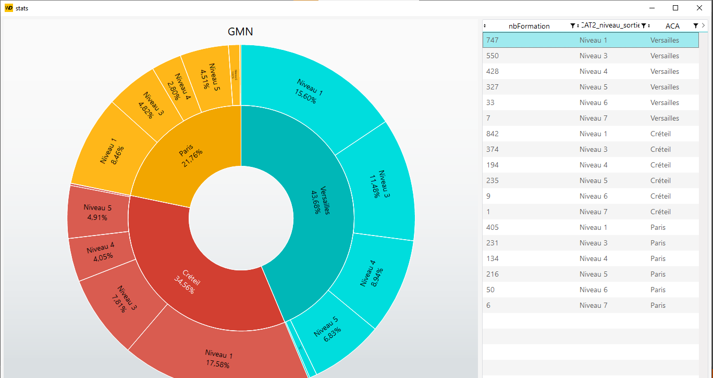
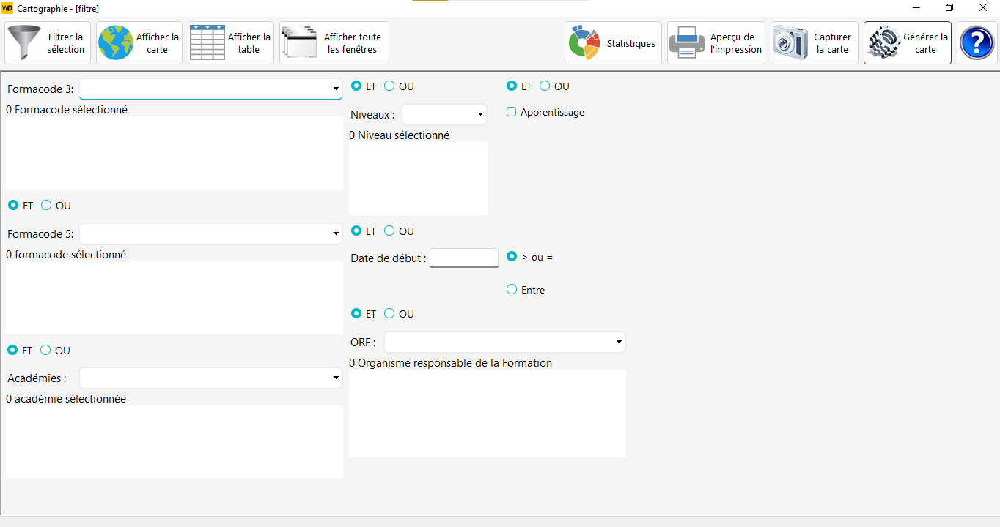

1 / 20
.bmp)
Voici la fenetre principale du programme en developpement.
2 / 20

Ceci est le premier test réussis avec les données de la BDD.
3 / 20

Le premier filtre ajouté. Ce filtre, sert a filtrer les formation selon le formacode 3.
4 / 20

Demonstration du résultat de l'affichage de la carte avec plusieurs filtre séléctionnés.
5 / 20

Démonstration du résulat de la carte et du tableau.
6 / 20

Création d'une fenetre filtre.
7 / 20

Ajout d'un bouton qui permet de partagé l'espace de la fenetre mère.
8 / 20

Ajout de couleurs selon les académies.
9 / 20

Ceci est la partie du code, qui permet d'exécuter la requête SQL.
10 / 20

Démonstration du résulat de la reqête dans la table.
11 / 20

Cette fonction, permet d'assembler les filtre qu'on a choisi,
et de les concatener de façon a ce qu'il soit interpreter dans la clause WHERE de la requête SQL.
12 / 20

Ceci est un Etat(le nom du coposant WINDEV), il sert a générer un PDF selon les information de la requête.
13 / 20

Cette variable sert a créer la popup.
14 / 20

Cette fonction sert a remplacer certain caractère qui ne sont pas compris, par le HTML, il sont remplacer par leurs nom HTML.
15 / 20

Ceci, est une fenetre statistique, qui permet d'afficher selon le résultat de la requête,
les pourcentages des formations selon les niveaux de sortie des formations, les académies etc...
16 / 20

Ceci est l'apperçu, après l'ajout de tous les boutons, pour chacune des fonctionnalités.
17 / 20

Dans cette fenêtre on peux ajouter un prescripteur (Client), qu'on pourra ensuite rattaché à un formacode.
Elle va permettre de se constituer une base de données clients.
18 / 20

Démonstration de l'assignation d'un formacode à un prescripteur.
19 / 20

Ceci est le résultat de l'integration de mon travail, sur une application qui était en production.
Le travail d'intégration a pris un peu plus qu'une journée.
20 / 20

Ceci est une fenetre de remerciements, créé vers la fin de mon stage, afin d'apprendre à utiliser les composant multimédia de WINDEV.
❮
❯